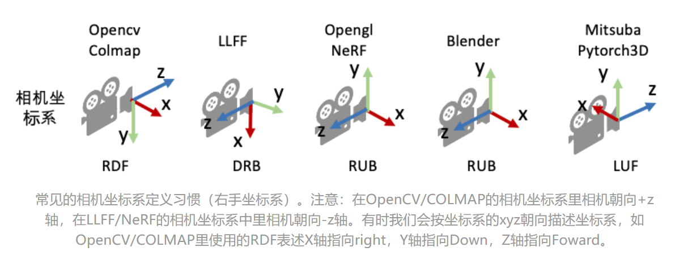

相机位姿（pose）与外参（extrinsic）矩阵
w2c == extrinsic
c2w == pose
外参矩阵即w2c (world to camera)矩阵，作用是将世界坐标系中的点坐标变换到相机坐标系，由一个单位正交旋转矩阵$R$和平移矢量$t$组成。记相机坐标为$P_c$，世界坐标为$P_w$，则
外参矩阵的逆矩阵即相机位姿，也就是c2w (camera to world)矩阵，作用是将相机坐标系中的点坐标变换到世界坐标系。c2w直接描述了相机坐标系的朝向和原点，也可以写成旋转矩阵和平移矢量的组合，
其中旋转矩阵从左到右的每一列分别表示相机坐标系的X, Y, Z轴在世界坐标系下对应的方向，平移向量表示的是相机原点（camera center）在世界坐标系的位置。
c2w和w2c的相互转换
c2w和w2c互为逆矩阵，即
可通过计算得$R=R_c^T,t=-RC$.
相机内参（intrinsic）
相机的内参矩阵将相机坐标系下的3D坐标映射到2D的图像平面，这里以针孔相机（Pinhole camera）为例介绍相机的内参矩阵K：
内参矩阵K包含4个值，其中$f_x$和$f_y$是相机的水平和垂直焦距（对于理想的针孔相机，$f_x$=$f_y$）。焦距的物理含义是相机中心到成像平面的距离，长度以像素为单位。cx和cy是图像原点相对于相机光心的水平和垂直偏移量。cx，cy有时候可以用图像宽和高的1/2近似。
Camera Convention
常见的相机坐标系定义：
